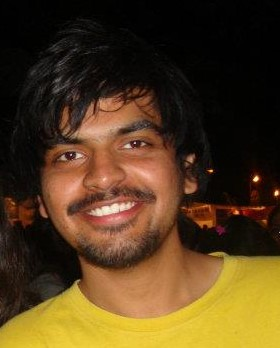

|  |
Aditya ChaturvediFront-End Engineer I am an Engineer. Courteous and enthusiastic, I am interested in IT and everything in its orbit. I recently began to be fascinated by web programming, e.g. developing apps and building websites. I am keen to gain more experience in the field. For this reason, I am looking for a company willing to offer me a placement among their developers. In return, I would offer my full commitment, and be a pleasant and friendly addition to your team. I am therefore currently looking for a job as a front-end developer. |
| HTML | ⭐⭐⭐⭐⭐ |
| CSS | ⭐⭐⭐⭐⭐ |
| Bootstrap | ⭐⭐⭐⭐⭐ |
| JavaScript | ⭐⭐⭐⭐ |
| JQuery | ⭐⭐⭐⭐ |
| React | ⭐⭐⭐ |